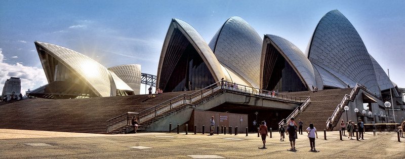

3. Is aesthetic.
The aesthetic quality of a product is integral to its usefulness because products are used every day and have an effect on people and their well-being. Only well-executed objects can be beautiful.

The Sydney Opera House.
Image credit: Mariano Mantel